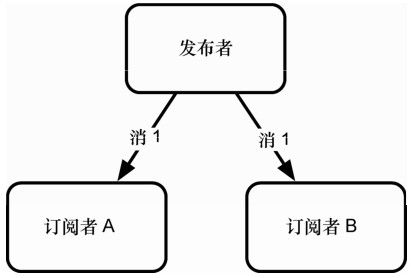
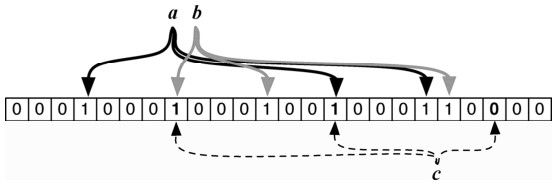

Redis 就像润滑油。润滑油通常用于润滑系统的各个运转部件，通过减少摩擦，保持它们运行顺畅，并加快其整体功能。不论哪种系统构造，加点润滑油很可能有改善。有时候，只要明智地使用Redis，就能搞定你的问题。
Redis（REmote DIctionary Service，远程字典服务）最早发布于 2009年，是一个简单易用的键值对存储库，带有一套成熟的命令。若论速度，很多数据库难出其右。它读取速度快，写入速度更快，根据某些基准测试，每秒可处理高达10万次SET操作。Redis的创始人是萨尔瓦托·勒圣菲利波（Salvatore Sanfilippo），他把该项目称为“数据结构服务器”，以反映其对复杂数据类型及其他功能的细致处理。这不只是一个超快的键值对存储系统，学习它，将使我们对现代数据库的了解更加完整。
将Redis精确归类可能有点困难。当然，从基本层面上说，它是一个键-值对存储库。但这种简单的说法并不全面。虽然 Redis 没有达到文档型数据库的程度，但它支持高级的数据结构。它支持基于集合的查询操作，但不支持关系数据库中同样的粒度或类型。当然，它很快，为了速度而在持久性方面作出了让步。
Redis 是高级数据结构服务器，此外，它也是阻塞队列（或栈）和发布-订阅系统。它支持可配置的到期策略、持久性级别，以及复制选项。所有这些使得 Redis 不仅是某类数据库中的一员，更是有用的数据结构算法和程序的工具包。
Redis 有丰富的客户端库，在许多编程语言中可以很方便地使用它。它不仅易用，还是一种乐趣。如果说API是程序员的用户体验，那么在现代艺术博物馆中Redis应该和MacCube放在一起。
在第1天和第2天，我们将探讨Redis的功能、约定和配置。与往常一样，从简单的CRUD操作开始，我们会很快转向更高级的操作，涉及更强大的数据结构：列表、哈希表、集合和有序集合。我们将创建事务，并操作数据有效期的特征。我们会用Redis 创建一个简单的消息队列，并探讨其发布-订阅功能。然后，我们将深入探讨Redis的配置和复制选项，学习如何在数据持久性和速度之间，取得适合应用程序的平衡。
数据库常常彼此配合使用，这种趋势在增加。把 Redis 安排在本书的最后介绍，这样我们就可以用这种方式使用它。在第3天，我们将构建我们的终极系统，一个功能丰富的多数据库的音乐解决方案，包括Redis、CouchDB、Neo4j和Postgres，用Node.js将它们结合在一起。
对Redis的开发团队来说，命令行界面（Comnand-Line Interface，CLI）最重要（也深受世界各地用户的喜爱），所以我们将在第1天讨论Redis的许多命令，Redis中可用的命令共用124条。最重要的是理解它复杂的数据类型，以及除了简单的“检索此键的值”之外，如何通过更多的方式查询。
Redis可以通过一些包管理工具来安装，如Mac的Homebrew，但是编译生成也不难。1我们将使用2.4版。安装之后，可以通过调用下面的命令启动服务器：
1 http://redis.io
$ redis-server
在默认情况下，它不会在后台运行，但是可以在命令后加上 &，实现后台运行，或者也可以打开另一个终端。接下来运行命令行工具，它应该自动连接到默认的6379端口。连接后，尝试来ping服务器。
$ redis-cli
redis 127.0.0.1:6379> PING
PONG
如果无法连接，你就会收到一条错误消息。输入help命令将显示帮助选项列表。输入help后面跟一个空格，然后输入任何命令，会给出该命令的帮助。如果你不知道任何一条Redis命令，按Tab键会循环列出所有的选项。
redis 127.0.0.1:6379> help
Type: "help @<group>" to get a list of commands in <group>
"help <command>" for help on <command>
"help <tab>" to get a list of possible help topics
"quit" to exit
今天，我们要用Redis构建一个短URL服务的后端，类似于tinyurl.com或bit.ly。短URL服务将很长的URL映射到自己域名中的短URL http，例如，将://www.myveryververylongdomain. com/somelongpath.php 映射到http://bit.ly/VLD。当用户访问这个短URL时，会重定向到映射前的长URL，这样用户就不需要发送长字符串，同时也为短URL的创造者提供了一些统计数据，例如，访问次数。
在 Redis 中，可以使用 SET 命令，将短码 7wks作为键，将 http://www. sevenweeks.org 作为值。SET 总是需要两个参数，一个键和一个值。检索值，只需要 GET命令和键名。
redis 127.0.0.1:6379> SET 7wks http://www.sevenweeks.org/
OK
redis 127.0.0.1:6379> GET 7wks
"http://www.sevenweeks.org/"
为了减少通信开销，也可以使用MSET设置多个值，比如，任何数量的键–值对。这le.com里将Goog映射到gog，Yahoo.com映射到yah。
redis 127.0.0.1:6379> MSET gog http://www.google.com yah http://www.yahoo.com
OK
相应地，MGET使用多个键，返回值是一个有序列表。
redis 127.0.0.1:6379> MGET gog yah
1) "http://www.google.com/"
2) "http://www.yahoo.com/"
虽然 Redis 存储字符串，但它也能识别整数，并提供一些简单的整数操作。如果我们想记录数据集中短键不断增长的总数，可以创建一个count变量，随后使用INCR命令递增它。
redis 127.0.0.1:6379> SET count 2
OK
redis 127.0.0.1:6379> INC R count
(integer) 3
redis 127.0.0.1:6379> GET count
"3"
虽然GET以字符串的形式返回count，但INCR将它识别为一个整数，并对其加一。如果试图对任何非整数递增，结果就不妙了。
redis 127.0.0.1:6379> SET bad_count "a"
OK
redis 127.0.0.1:6379> INCR bad_count
(error) ERR value is not an integer or out of range
如果该值（不能解析为整数， Redis 将正确地指出问题。还可以用任意整数来递增INCRBY），也可以递减（DECR，DECRBY）。
我们已经在前面的数据库（Postgres和Neo4j）中看到过事务，Redis的MULTI块原子命令是类似的概念。如果将两个操作放在一个块内，例如SET和INCR，那么这两个操作要么都成功执行，要么都不执行。永远不会得到部分执行的结果。
我们将在一个事务内，以另一个短码作为一个URL的键，并递增计数。我们用MULTI命令开始事务，并用EXEC命令执行它。
redis 127.0 .0.1:6379> MULTI
OK
redis 127.0.0.1:6379> SET prag http://pragprog.com
QUEUED
redis 127.0.0.1:6379> INCR count
QUEUED
redis 127.0.0.1:6379> EXEC
1) OK
2) (integer) 2
在使用MULTI命令时，命令在定义时实际上并不执行（类似于Postgres的事务），而是排入队列，然后按顺序执行。
类似于SQL中的ROLLBACK，可以用DISCARD命令停止事务，这将清除事务队列。不同于ROLLBACK，它不会恢复数据库，它只是根本不运行事务。尽管底层的概念是不同的机制（事务回滚与操作取消），但效果是相同的。
到目前为止，我们还没有看到太多复杂的行为。用键存储字符串和整数值（甚至是事务），都很好且没有问题，但大多数编程和数据存储的问题需要处理许多数据类型。Redis能存储列表、哈希表、集合和有序集合，这自然解释了它的受欢迎程度。在探讨了那些可以定制的复杂操作之后，你就会同意这种说法。
采用这些集合数据类型，每个键可以包含大量的值（最多2^32个元素，即超过40亿）。所有的Facebook账户作为一个列表，放在一个键下也毫无问题。
虽然有些Redis命令可能看起来有点神秘，但它们一般遵循一个好的模式。SET命令以S开始，哈希表是H，而有序集合是Z。列表命令一般以L（左）或R（右）开始，这取决于操作的方向（如LPUSH）。
1．哈希表
哈希表类似于嵌套的Redis对象，可以存储任意数量的键-值对。我们使用一个哈希表来记录用户，他们注册了我们的短URL服务。
哈希表很好用，因为它有助于避免使用不自然的键前缀来存储数据。（请注意，在键中用冒号[:]。这是一个有效的字符，通常在逻辑上将键分隔成几段。这仅仅是一个惯例，在Redis中没有更深的含义。）
redis 127.0.0.1:6379> MSET user:eric:name "Eric Redmond" user:eric:password s3cret
OK
redis 127.0.0.1:6379> MGET user:eric:name user:eric:password
1) "Eric Redmond"
2) "s3cret"
不使用分离的键，可以创建一个哈希表，包含它自己的键-值对。
redis 127.0.0.1:6379> HMSET user:eric name "Eric Redmond" password s3cret
OK
只需要记录单个Redis键，就能获取哈希表的所有值。
redis 127.0.0.1:6379> HVALS user:eric
1) "Eric Redmond"
2) "s3cret"
也可以获取所有哈希键。
redis 127 .0.0.1:6379> HKEYS user:eric
1) "name"
2) "password"
或者，可以通过传递Redis键，后面跟哈希键，得到单个值。这里只得到了密码。
redis 127.0.0.1:6379> HGET user:eric password
"s3cret"
不同于文档型数据存储 MongoDB 和 CouchDB，Redis 的哈希表不能嵌套（任何其他的复杂数据类型也不行，如列表）。换言之，哈希表只能存储字符串值。
还有更多的命令，用于删除哈希字段（HDEL），以某个计数值来递增一个整数字段的值（HINCRBY），或获取一个哈希表中的字段数（HLEN）。
2．列表
列表包含多个有序值，既可以作为队列（先进先出），也可以作为栈（后进先出）。它们还有更复杂的操作，在列表中的某处插入，限制列表的大小，以及在列表之间移动值。
由于短URL服务现在可以记录用户，因此我们希望让它们保存一个愿望列表，记录想访问的URL。为了创建想访问网站的短码列表，设置键为 USERNAME:wishlist，并将任意数量的值压入列表的右边（末尾）。
redis 127.0.0.1:6379> RPUSH eric:wishlist 7wks gog prag
(integer) 3
类似于大多数集合值的插入，Redis 命令返回推入值的数量。换言之，将三个值压入列表，所以它返回3。随时可以用LLEN命令来获取列表的长度。
利用列表范围命令LRANGE，可以指定第一个和最后一个位置，取得列表的任何部分。Redis中所有列表操作使用从零开始的索引。负的位置是指从末尾算起的步数。
redis 127.0.0.1:6379> LRANGE eric:wishlist 0 -1
1) "7wks"
2) "gog"
3) "prag"
LREM命令从给定的键中删除一些匹配的值。它也需要一个数目，以知道要删除多少个匹配的值。这里设定计数为0，即删除所有匹配的值：
redis 127.0.0.1:6379> LREM eric:wishlist 0 gog
设定计数大于 0，将只删除这个数目的匹配值。计数设定为负数，将删除该数目的匹配值，但从列表的末尾（右侧）扫描。
想按添加的顺序来删除并获取每个值（像队列一样），就可以从列表左侧（头部）弹如果出它们。
redis 127.0.0.1:6379> LPOP eric:wishlist
"7wks"
如果想表现得像栈一样，在RPUSH值后，要从列表尾部RPOP。所有这些操作都在常数时间内完成。
关于前面的命令组合，也可以使用LPUSH和RPOP命令实现类似的效果（队列），或使用LPUSH和LPOP命令实现栈的效果。
假设我们想从愿望列表中移除值，放入另一个已访问网站的列表中。为了原子地执行这个移动操作，可以将弹出和压入操作放在一个MULTI块内。在Ruby中，这些步骤看起来可能是这样的（这里不能使用CLI，因为你必须保存弹出的值，所以我们使用redis-rbgem）：
redis.multi do
site = redis.rpop('eric:wishlist')
redis.lpush ('eric:visited', site)
end
但 Redis 提供了一条命令，从一个列表的尾部弹出值，并压入另一个列表的头部。这称为RPOPLPUSH（右弹出，左压入）。
redis 127.0.0.1:6379> RPOPLPUSH eric:wishlist eric:visited
"prag"
如果你查询愿望列表的范围，prag将消失；现在它在visited列表中。这是一个有用的命令排队机制。
如果你查阅Redis文档以找到RPOPRPUSH、LPOPLPUSH和LPOPRPUSH命令，你可能会沮丧地发现它们不存在。RPOPLPUSH是你唯一的选择，你必须相应地构建你的列表。
3．阻塞列表
既然短URL服务已启动，就添加一些社交活动，比如，添加一个实时评论系统，让人们发布帖子，评论他们已经访问过的网站。
我们来写一个简单的消息传输系统，其中多个客户端可以压入评论，并且一个客户端（整理者）从队列中弹出消息。我们希望整理者仅仅监听新的评论，在它们到达时弹出它们。Redis为这种目的提供了一些阻塞命令。
首先，打开另一个终端，并启动另一个redis-cli客户端。这将是整理者。阻塞直到有值可弹出的命令是BRPOP。它需要指定弹出值所属的键，以及超时的秒数，设置为5分钟。
redis 127.0.0.1:6379> BRPOP comments 300
然后切换回第一个控制台，把一条消息压入评论里。
redis 127.0.0.1:6379> LPUSH comments "Prag is great! I buy all my books there."
如果你切换回整理者控制台，将看到两行返回：键和弹出的值。控制台也会输出它花费在阻塞上的时间。
1) "comments"
2) "Prag is great! I buy all my books there."
(50.22s)
还有一个左弹出的阻塞版本（ BLPOP ），以及右弹出、左推入的阻塞版本（BRPOPLPUSH）。
4．集合
短URL服务发展顺利，如果能用某种方法将常用的URL分组就更好了。
集合是无序聚合，没有重复的值，是两个或两个以上的键值之间执行复杂操作的很好选择，例如，并集或交集等。
如果我们想用一个共同的键将多组URL归类，可以使用SADD命令添加多个值。
redis 127.0.0.1:6379> SADD news nytimes.com pragprog.com
(integer) 2
Redis添加了两个值。可以通过SMEMBERS命令获取整个集合，顺序是不确定的。
redis 127.0.0.1:6379> SMEMBERS news
1) "pragprog.com"
2) "nytimes.com"
我们为技术相关网站添加另一个类别，称为tech。
redis 127.0.0.1:6379> SADD tech pragprog.com apple.com
(integer) 2
为找到两个网站集合的交集，也就是既提供新闻又聚焦技术，使用SINTER命令。
redis 127.0.0.1:6379> SINTER news tech
1) "pragprog.com"
可以从一个集合中删除在另一集合中出现的所有值，这也同样容易。要找到所有非技术类的新闻网站，使用SDIFF命令：
redis 127.0.0.1:6379> SDIFF news tech
1) "nytimes.com"
还可以建立一个网站并集，包含新闻网站或技术网站。因为它是一个集合，所以重复元素将丢弃。
redis 127.0.0.1:6379> SUNION news tech
1) "apple.com"
2) " pragprog.com"
3) "nytimes.com"
这个并集也可以直接存储到一个新的集合中（SUNIONSTORE destination key [key ...]）。
redis 127.0.0.1:6379> SUNIONSTORE websites news tech
这也提供了一个有用的技巧，将一个键的值复制到另一个键中，如 SUNIONSTORE news_copy news。还有类似的命令，用于存储交集（ SINTERSTORE ）和差集（SDIFFSTORE）。
就像RPOPLPUSH命令将值从一个列表移到另一个列表，SMOVE命令对集合完成相同的任务，但它更容易记。
就像LLEN命令查询列表的长度，SCARD（集合基数）对集合计数，但它更难记。
因为集合是无序的，所以没有左、右或其他位置命令。从集合弹出一个随机值，只需要SPOP键，删除值的命令是SREM key value [value ...]。
不同于列表，集合没有阻塞命令。
5．有序集合
之前我们看到的其他 Redis 数据类型，很容易映射到常见的编程语言结构上，而有序集合从之前的每个数据类型里取了一些东西。它们像列表一样有序，像集合一样元素唯一。它们像哈希表一样有字段-值对，但没有字符串字段，而是代之以数字，表示表示值的顺序。可以将有序集合想象为一个随机存取的优先级队列。但这种能力也有代价。在内部，因为有序集合保持值的顺序，所以插入的时间复杂度是log（N）（其中N是集合的大小），不像哈希表或列表的时间复杂度是常量。
下面要记录特定短码的流行度。每次有人访问一个URL时，得分就会增加。类似于哈希表，在有序集合中增加一个值，需要在Redis的键名后跟两个值：得分和成员。
redis 127.0.0.1:6379> ZADD visits 500 7wks 9 gog 9999 prag
(integer) 3
要增加一个得分，要么重新添加新的得分，这只是更新得分，但没有添加一个新值；要么按某个数字做递增，这将返回新的值。
redis 127.0.0.1:6379> ZINCRBY visits 1 prag
"10000"
也可以在ZINCRBY中设置负数，实现递减。
6．范围
要从 visits集合获取值，可以发出一条范围命令，ZRANGE，它按位置返回，就像列表数据类型的LRANGE命令。但对于有序集合，位置按得分从最低到最高排序。因此，要获得得分前两位的被访问网站（从零开始），使用下面的命令：
redis 127.0.0.1:6379> ZRANGE visits 0 1
1) "gog"
2) "7wks"
如果还要得到每个元素的得分，就在前面的命令加上WITHSCORES。要得到反序的元素，在命令中插入REV，即ZREVRANGE。
redis 127.0.0.1:6379> ZREVRANGE visits 0 -1 WITHSCORES
1) "prag"
2）"10000"
3) "7wks"
4）"500"
5) "gog"
6）"9"
但是，如果我们正在使用一个有序集合，很可能我们要按得分而不是位置来划定范围。ZRANGEBYSCORE的语法与ZRANGE稍有不同。默认情况下低和高的范围数字是包含在内的，如果要排除一个得分数字，可以在它前面加上左圆括号“（”。因此，下面的命令将返回所有的分数，其中9≤分数≤9999：
redis 127.0.0.1:6379> ZRANGEBYSCORE visits 9 9999
1) "gog"
2) "7wks"
但是以下命令将返回9＜分数≤9999：
redis 127.0.0.1:6379> ZRANGEBYSCORE visits (9 9999
1) "7wks"
还可以按正数和负数值划定范围，包括无穷。这将返回整个集合。
redis 127.0.0.1:6379> ZRANGEBYSCORE visits -inf inf
也可以使用ZREVRANGEBYSCORE，反序列出它们。
类似于按排名（索引）或得分取得一个范围内的值， ZREMRANGEBYRANK 和 ZREMRANGEBYSCORE分别按照排名或得分来删除值。
7．并集
就像集合数据类型一样，可以创建一个目标键，让它包含一个或多个键的并集或交集。这是Redis中更为复杂的命令之一，因为它不仅必须要联合键（这是比较简单的操作），而且要合并（可能）不同的分数。并集操作看起来像下面这样：
ZUNIONSTORE destination numkeys key [key ...]
[WEIGHTS weight [weight ...]] [AGGREGATE SUM|MIN|MAX]
destination是要存入的键，key是一个或多个需要做并集的键。numkeys就是你即将做并集的键的数目，而weight是可选的数字，用来乘以相应键的每一个得分（如果有两个键，就可以有两个权重，以此类推）。最后，aggregate是处理每个加权得分的可选规则，默认是总和，但也可以在许多得分之间选择最小值或最大值。
将用这条命令来衡量一个短码的有序集合的重要性。
首先，将创建另一个键，记录各个短码的投票得分。站点的每个访问者都可以投票，表明他们是否喜欢这个网站，每张票增加一个点。
redis 127.0.0.1:6379> ZADD votes 2 7wks 0 gog 9001 prag
(integer) 3
我们想结合选票和访问量，找出我们系统中最重要的网站。选票很重要，网站访问但紧随其后，量也占一定权重（也许人们对该网站非常着迷，但忘了投票）。我们想要添加两种类型的分数，共同计算出一个新的重要性分数，其中选票具有双倍的重要性，即乘以二。
ZUNIONSTORE importance 2 visits votes WEIGHTS 1 2 AGGREGATE SUM
(integer) 3
redis 127.0.0.1:6379> ZRANGEBYSCORE importance -inf inf WITHSCORES
1) "gog"
2)"9"
3) "7wks"
4)"504"
5) "prag"
6)"28002"
这个命令的其他用法也很强大。例如，如果需要对集合内的所有成绩加倍，就可以用2的权重对单个键做并集操作，并把结果存储回它本身。
redis 127.0.0.1:6379> ZUNIONSTORE votes 1 votes WEIGHTS 2
2 (integer)
redis 127.0.0.1:6379> ZRANGE votes 0 -1 WITHSCORES
1) "gog"
2)"0"
3) "7wks"
4)"4"
5) "prag"
6)"18002"
对有序集合也有一个类似的命令，用于执行交集操作（ZINTERSTORE）。
像Redis这样的键-值对系统有一种常见用法，就是作为数据的快速访问缓存，重新获取或计算这些数据代价高昂。到期功能有助于避免总的键集无限增长，做法是安排 Redis经过一定的时间就删除一个键-值对。
标记一个键为到期，需要EXPIRE命令，一个现有的键，以及以秒计算的存在时间。下面设置一个键，并设置它在 10 秒后到期。我们可以在 10 秒内检查这个键是否存在（EXISTS）并返回1（真）。如果等待执行，它最终将返回 0（假）。
redis 127.0.0.1:6379> SET ice "I'm melting…"
OK
redis 127.0.0.1:6379> EXPIRE ice 10
(integer) 1
redis 12 7.0.0.1:6379> EXISTS ice
(integer) 1
redis 127.0.0.1:6379> EXISTS ice
(integer) 0
设置键和到期时间是如此常用的操作，于是Redis提供了一条简捷命令，即SETEX。
redis 127.0.0.1:6379> SETEX ice 10 "I'm melting…"
可以用TTL查询一个键的生存时间。像前面那样设置ice到期，检查它的TTL将返回剩余的秒数。
redis 127.0.0.1:6379> TTL ice
(integer) 4
在键到期之前的任何时候，都可以通过PERSIST key消除超时。
redis 127.0.0.1:6379> PERSIST ice
要标记倒计时到特定的时间，可以用EXPIREAT。它接受一个Unix时间戳（自1970年1月1日起的秒数），而不是计算秒数。换言之，EXPIREAT是绝对超时，EXPIRE用于相对超时。
有一个常用技巧，只保留最近用过的键：每当你检索一个值时，更新它的到期时间。这是最近使用（MRU，Most Recently Used）缓存算法，确保你最近使用的键将继续保留在Redis中，而被忽视的键将正常到期。
到目前为止，我们只与单个命名空间交互。就像Riak中的桶（bucket），有时需要通过命名空间将键分隔开。例如，如果你写了一个国际化的键值对存储库，可以在不同的命名空间中存储不同的回应内容。键greeting可以在德文的命名空间里设置为“gutentag”，在法文的命名空间里设置为“bonjour”。用户选择语言后，应用程序就从指定的命名空间中获取所有的值。
在 Redis 的术语中，命名空间称为数据库（database），以数字为键。到目前为止，我们一直与默认的命名空间0（也称为数据库0）交互。这里设置greeting为英文的hello。
redi s 127.0.0.1:6379> SET greeting hello
OK
redis 127.0.0.1:6379> GET greeting
"hello"
但是，如果通过SELECT命令切换到另一个数据库，该键就不可用了。
redis 127.0.0.1:6379> SELECT 1
OK
redis 127.0.0.1:6379[1]> GET greeting
(nil)
在这个数据库的命名空间设置一个值，不会影响原来命名空间的值。
redis 127.0.0.1:6379[1]> SET greeting "guten tag"
OK
redis 127.0.0.1:6379[1]> SELECT 0
OK
redis 127.0.0.1:6379> GET greeting
"hello"
既然所有的数据库都运行在同一服务器实例内，Redis就允许用MOVE命令，在不同命名空间之间移动键。下面将greeting移到数据库2：
redis 127.0.0.1:6379> MOVE greeting 2
(integer) 2
redis 127.0.0.1:6379> SELECT 2
OK
redis 127.0.0.1:6379[2]> GET greeting
"hello"
如果针对单个 Redis 服务器运行不同的应用程序，又要允许这些应用程序相互之间交换数据，这个功能就有用了。
Redis 有大量的其他操作命令，如重命名键（RENAME），确定键值的类型（TYPE），以及删除键值对（DEL）。还有痛苦危险的FLUSHDB，它从这个Redis数据库中删除所有的键，以及灾难性的命令FLUSHALL，它从所有Redis数据库删除所有的键。请查看在线文档，找到Redis命令的完整列表。
第1天总结
Redis拥有多种数据类型，并能够执行复杂的查询，这使它超越了标准的键-值对存储库。它可以作为一个栈、队列或优先队列；可以作为对象存储系统（通过哈希表）；甚至可以执行复杂的集合操作，如并集、交集和差集（diff）。它提供了许多原子命令，同时对于那些多步命令，它提供了一种事务机制。它有键到期的内置功能，在作为缓存时，这是有用的。
第1天作业
求索
1. 查找完整的Redis命令文档，包括命令详细信息中以大O标记（O(x)）的时间复杂度。
实践
1．安装你喜欢的编程语言驱动程序，连接到Redis服务器。在一个事务内插入并递增值。
2．使用你选择的驱动程序，创建一个程序，读取阻塞列表并输出到某个地方（控制台、文件、Socket.io等），并且创建另一个程序写入相同的列表。
第1天，我们介绍了作为数据结构服务器的 Redis。今天，我们将在此基础上介绍Redis提供的一些高级功能，如管道、发布-订阅模型、系统配置，以及复制。此外，我们将看到如何创建一个Redis集群，快速存储大量数据，并使用先进技术介绍Bloom过滤器（Bloom filter）。
Redis有 20 000行源代码，是一个相当简单的项目。但是，除了代码规模，它还有一个简单的接口，接受我们写在控制台里的每一个字符串。使用 Redis 的原因如图 8-1所示。
图8-1 原因
1．telnet
可以不用命令行界面与Redis交互，而是利用telnet，通过TCP字符流输入命令，并以回车换行符（CRLF，或\r\n）终止该命令。
redis/telnet.sh
$ t elnet localhost 6379
Trying 127.0.0.1...
Connected to localhost.
Escape character is '^]'.
SET test hello
①+OK
GET test
② $5
hello
SADD stest 1 99
③ :2
SMEMBERS stest
④*2
$1
1
$2
99
CTRL-]
我们可以看到，输入和我们在控制台提供的一样，但控制台的响应更整洁一点。
① Redis流在OK状态前加了一个+号。
② 在它返回字符串hello之前，向它发送$5，这意味着“以下字符串有5个字符。”
③ 向测试键添加两个集合元素之后，返回的数字2前面有“：”，代表一个整数（两个值添加成功）。
④ 最后，当我们请求两个元素时，返回的第一行以一个星号和数字2开始，意味着复杂的值将返回。接下来的两行如同hello字符串，但包含字符串1，后面是字符串有两个99。
2．管道
还可以通过使用BSD的netcat（nc）命令，你可能会发现许多UNIX机器上已经安装了这条命令，一次性流入我们自己的字符串。使用 netcat，我们必须明确地以 CRLF 结束一行（telnet隐含就是这样做的）。echo命令完成后，我们还要睡眠一秒种，给Redis服务器一些时间返回。一些nc实现有-q选项，从而不需要睡眠，但不是所有的nc实现都是这样，所以请自由尝试一下。
$ (echo -en "ECHO hello\r\n"; sleep 1) | nc localhost 6379
$5
hello
可以将命令组织为管道的形式，从而利用这种控制方式的优势，或者在单个请求中流入多条命令。
$ (echo -en "PING\r\nPING\r\nPING\r\n"; sleep 1) | nc localhost 6379
+PONG
+PONG
+PONG
这可能比每次推入一条命令远为高效，如果有意义，就应该考虑这样做——尤其是在事务中。只是要确保每一条命令以\r\n结束，这是服务器要求的定界符。
3．发布-订阅
昨天，我们用列表数据类型实现了一个基本的阻塞队列。我们让数据排队，并能够被阻塞弹出命令读取。利用该队列，实现了一个很基本的发布-订阅模型。可以向该队列推送任何数量的消息，当消息可以读取时，唯一的队列读者会弹出它们。阻塞队列很强大，但有限制。在许多情况下，我们想要行为正好倒过来，即几个订阅者需要读取单一发布者的公告，如图 8-2 所示，发布者向所有订阅者发送消息。Redis 提供了一些专门的发布-订阅（或pub-sub）命令。
昨天我们用阻塞列表实现了评论机制，接下来我们做一点改进，允许一个用户向多个订阅者发布一条评论（而不是只有一个订阅者）。我们首先让一些订阅者连接到一个键，这在pub-sub术语中称为通道（channel）。我们启动两个新的客户端，订阅该评论通道。订阅将导致CLI阻塞。

图8-2 一个发布者向所有订阅者发送一条消息
redis 127.0.0.1:6379> SUBSCRIBE comments
Reading messages... (press Ctrl-C to quit)
1) "subscribe"
2) "comments"
3) (integer) 1
有了两个订阅者，可以将任何字符串作为一条消息，发布到comments通道。PUBLISH命令将返回整数2，意思是两个订阅者接收到了它。
redis 127.0.0.1:6379> PUBLISH comments "Check out this shortcoded site! 7wks"
(integer) 2
两个订阅者都将收到一个多块回复（multibulk reply，是一个列表），包含三个元素：字符串“message”、通道的名字和发布的消息值。
1) "message"
2) "comments"
3) "Check out this shortcoded site! 7wks"
如果你的客户端希望不再接收到信件，它们可以执行UNSUBSCRIBE comments命令，从comments通道断开，或者干脆用单独的UNSUBSCRIBE命令，从所有通道断开。但是请注意，使用redis-cli，你需要按CTRL+C快捷键来中断连接。
在学习改变Redis的系统设置之前，先快速看看INFO命令是有价值的，因为更改设置值也将改变这里的某些值。INFO命令输出服务器数据列表，包括版本、进程ID、使用的内存和运行时间。
redis 127.0.0.1:6379> INFO
redis_version:2.4.5
redis_git_sha1:00000000
redis_git_dirty:0
arch_bits:64
multiplexing_api:kqueue
process_id:54046
uptime_in_seconds:4
uptime_in_days:0
lru_clock:1807217
…
在本章中，你可能需要多次使用这个命令，因为它提供了这个服务器全局信息的有用快照和设置。它甚至还提供了持久性、内存碎片和复制服务器状态的信息。
到目前为止，我们只是直接使用Redis。Redis的强大之处主要来源于它的可配置性，允许你根据使用情况量身定制。发布版所带的 redis.conf 文件，位于*nix 系统的/etc/redis目录下，该文件基本上是自描述的，所以我们只讨论它的一部分。
我们将依次介绍几个常用设置。
daemonize no
port 6379
loglevel verbose
logfile stdout
database 16
默认情况下，把daemonize设置为no，因此服务器总是在前台启动。这对于测试很好，但对生产环境不是很友好。此值更改为yes将在后台运行服务器，同时将服务器的进程ID写入一个pid文件中。
下一行是这台服务器的默认端口号，端口6379。如果在一台机器上运行多个Redis服务器，这特别有用。loglevel默认设置为verbose，但在生产环境中将它设置为notice或warning会很好。logfile输出到stdout（标准输出，控制台），但如果在守护进程模式运行Redis，就需要一个文件名。
database设置我们可用的Redis数据库的数量。昨天我们看到了如何在数据库之间切换。如果你打算只使用单个数据库命名空间，将它设置为1是不错的。
1．持久性
Redis 有几个持久性选项。首先是完全不持久，即所有值仅保存在内存中。如果你正在运行一个基本的缓存服务器，这是一个合理的选择，因为持久性总是增加延迟。
与其他类似memcached1的快速访问缓存相比，Redis有一点不同，它内置支持将值保存到磁盘。在默认情况下，键值对只是偶尔保存。可以运行LASTSAVE命令，获得Redis最后一次成功写入磁盘的UNIX时间戳，也可以查看服务器INFO输出的last_save_time字段。
注释1 http://www.memcached.org/
可以通过执行SAVE命令（或BGSAVE，在后台异步保存）强制持久。
redis 127.0.0.1:6379> SAVE
如果你查看Redis服务器日志，会看到类似于下面的行：
[46421] 10 Oct 19:11:50 * Background saving started by pid 52123
[52123] 10 Oct 19:11:50 * DB saved on disk
[46421] 10 Oct 19:11:50 * Background saving terminated with success
另一种持久性方法是在配置文件中改变快照设置。
2．快照
可以通过添加、删除或改变一个保存字段，来修改存储到磁盘的频率。在默认情况下有3项，由关键字save作为前缀，后面跟的是以秒计的时间，以及至少几个键发生改变才会写入磁盘。
例如，只要有键改变，每5分钟（300秒）触发一次保存，你会这样写：
save 300 1
Redis配置有一套很好的默认值。这组默认值意味着，如果 10 000个键改变了，在 60秒内保存；如果改变了10个键，在300秒内保存；如果改变了1个键，至少在900秒（15分钟）内保存。
save 900 1
save 300 10
save 60 10000
可以按照需要增减save行，以精确指定阈值。
在默认情况下，Redis 最终是持久的，因为它会根据保存设置定义的时间间隔，将值异步写入磁盘，或根据客户端发起的命令，强制写入磁盘。对于二级缓存或会话服务器，这是可以接受的，但对于存储你需要的持久数据（如金融数据），这是不够的。如果 Redis服务器崩溃，我们的用户对金钱上的损失可能会不高兴。
Redis提供了一个仅追加的文件（appendonly.aof），它保留了所有写命令的记录。这类似于我们在第4章中看到的预写入日志。如果值还未保存之前服务器崩溃，重新启动时会执行这些命令，恢复其状态；必须在redis.conf文件中将appendonly设置为yes来启用它。
appendonly yes
然后，我们必须决定命令追加到文件的频率。设置为 always 持久性更好，因为每一条命令都会保存。但它的速度也慢，这与人们使用Redis的原因相悖。默认情况下采用everysec，它节省了时间，每秒钟只写入命令一次。这是一个体面的权衡，因为它足够快，在最坏的情况下，你只会失去最后一秒钟的数据。最后，no也是一个选项，这只是让操作系统处理磁盘写入。它的写入频率相当低，选择它通常还不如完全忽略仅追加的文件。
# appendfsync always
appendfsync everysec
# appendfsync no
仅追加的文件有更详细的参数，当你需要应对具体的生产环境问题时，可能值得读一读配置文件里的参数。
1．安全性
虽然 Redis 本来不打算成为一个完全安全的服务器，但你可能会在 Redis 的文档中遇到requirepass设置和AUTH命令。忽略它们也没什么问题，因为它们仅仅是设置明文密码的模式。由于客户可能在一秒种内尝试近10万个密码，因此它几乎是一个有争议的问题，更不用说明文密码本身就不安全。如果你希望 Redis 安全，最好使用一个好的防火墙和SSH。
有趣的是，Redis允许你隐藏或禁止命令，通过晦涩提供命令级别的安全性。下面将 FLUSHALL 命令（从系统中删除所有的键）改成某个难以猜测的值，如c283d93ac9528f986023793b411e4ba2：
rename-command FLUSHALL c283d93ac9528f986023793b411e4ba2
如果试图对这个服务器执行FLUSHALL，将遇到一个错误。但秘密命令有效。
redis 127.0.0.1:6379> FLUSHALL
(error) ERR unknown command 'FLUSHALL'
redis 127.0.0.1:6379> c283d93ac9528f986023793b411e4ba2
OK
或者更好的是，可以将它设置为一个空白字符串，完全禁用这条命令。
rename-command FLUSHALL ""
可以将任意数量的命令设置为空字符串，从而减少命令环境中的命令。
2．调整参数
有一些更高级的设置，用于加速缓慢的查询日志，编码详细信息，调整延迟，以及导入外部配置文件。但要记住，如果你遇到一些关于 Redis 虚拟内存的文档，你最好尽可能避免它。它已经在Redis 2.4弃用了，并可能在将来的版本中删除。
为了帮助测试你的服务器配置，Redis提供了一个极好的基准测试工具。默认情况下，它连接到本地6379 端口并使用50 个并发的客户端发起 10 000个请求。可以使用参数-n执行 100 000个请求。
$ redis-benchmark -n 100000
====== PING (inline)======
100000 requests completed in 3.05 seconds
50 parallel clients
3 bytes payload
keep alive: 1
5.03% <= 1 milliseconds
98.44% <= 2 milliseconds
99.92% <= 3 milliseconds
100.00% <= 3 milliseconds
32808.40 requests per second
…
还测试了其他命令，如 SADD和 LRANGE等；较复杂的命令一般来说会花费更多的时间。
就像我们看到过的其他NoSQL数据库（如MongoDB和Neo4j），Redis支持主从复制。如果服务器没有设置为从属服务器，默认就是主服务器。数据将复制到任意数量的从属服务器。
设置从属服务器很容易。首先，需要redis.conf文件的副本。
$ cp redis.conf redis-s1.conf
该文件将基本保持不变，只进行以下改动：
port 6380
slaveof 127.0.0.1 6379
如果一切按计划进行，当启动从属服务器时，应该在从属服务器的日志中看到类似以下的内容：
$ redis-server redis-s1.conf
[9003] 16 Oct 23:51:52 * Connecting to MASTER...
[9003] 16 Oct 23:51:52 * MASTER <-> SLAVE sync started
[9003] 16 Oct 23:51:52 * Non blocking connect for SYNC fired the event.
[9003] 16 Oct 23:51:52 * MASTER <-> SLAVE sync: receiving 28 bytes from master
[9003] 16 Oct 23:51:52 * MASTER <-> SLAVE sync: Loading DB in memory
[9003] 16 Oct 23:51:52 * MASTER <-> SLAVE sync: Finished with success
你应该看到主服务器日志中字符串1 salves的输出。
redis 127.0.0.1:6379> SADD meetings "StarTrek Pastry Chefs" "LARPers Intl."
如果在命令行连接到从属服务器，应该能得到会议列表。
redis 127.0.0.1:6380> SMEMBERS meetings
1) "StarTrek Pastry Chefs"
2) "LARPers Intl."
在生产环境中，出于可用性或备份目的，你通常希望实现复制，因此让 Redis 从属服务器运行在不同的机器上。
目前为止，关于 Redis 有多快已经谈了很多，但如果不多试一些数据，很难感受到这到一点。
我们将一个大型数据集插入Redis服务器。如果你喜欢，你可以保持从属服务器运行，但如果你只有一个主服务器，那么笔记本电脑或台式机可能运行得更快。我们将获取超过250万册出版图书的书名列表，键来自于Freebase.com1的国际标准图书编号（ISBN）。
注释1 http://download.freebase.com/datadumps/latest/browse/book/isbn.tsv
首先要安装redis Ruby gem。
$ gem install redis
有几种方法可以插入大型数据集，它们一个比一个快，但一个比一个复杂。
最简单的方法，就是简单地遍历一个数据列表，并对每个值使用标准的redis-rb客户端执行SET命令。
redis/isbn.rb
LIMIT = 1.0 / 0 # 1.0/0 is Infinity in Ruby
# %w{rubygems hiredis redis/connection/hiredis}.each{|r| require r}
%w{rubygems time redis}.each{|r| require r}
$redis = Redis.new(:host => "127.0.0.1", :port => 6379)
$redis.flushall
count, start = 0, Time.now
File.open(ARGV[0]).each do|line|
count += 1
next if count == 1
isbn, _, _, title = line.split("\t")
next if isbn.empty? || title == "\n"
$redis.set(isbn, title.strip)
# set the LIMIT value if you do not wish to populate the entire dataset
break if count >= LIMIT
end
puts "#{count} items in #{Time.now - start} seconds"
$ ruby isbn.rb isbn.tsv
2456384 items in 266.690189 seconds
如果你想加快插入速度，并且没有运行 JRuby，可以选择安装 hiredis gem。这是一个用C写的驱动程序，比原生的Ruby驱动程序快很多。然后取消注释hiredis require行以加载驱动程序。对于这种计算密集型的操作，你可能看不到很大的改善，但我们强烈建议在Ruby生产环境中使用hiredis。
利用管道会带来巨大改进。这里以1000行作为一个批次，利用管道完成插入。减少的插入时间超过了300%。
redis/isbn_pipelined.rb
BATCH_SIZE = 1000
LIMIT = 1.0 / 0 in Ruby # 1.0/0 is Infinity
# %w{rubygems hiredis redis/connection/hiredis}.each{|r| require r}
%w{rubygems time redis}.each{|r| require r}
$redis = Redis.new(:host => "127.0.0.1", :port => 6379)
$redis.flushall
# set line data as a single batch update
def flush(batch)
$redis.pipelined do
batch.each do |saved_line|
isbn, _, _, title = line.split("\t")
next if isbn.empty? || title == "\n"
$redis.set(isbn,title.strip)
end
end
batch.clear
end
batch = []
count, start = 0, Time.now
File.open(ARGV[0]).each do |line|
count += 1
next if count == 1
# push lines into an array
batch << line
# if the array grows to BATCH_SIZE, flush it
if batch.size == BATCH_SIZE
flush(batch)
puts "#{count-1} items"
end
# set the LIMIT value if you do not wish to populate the entire dataset
break if count >= LIMIT
end
# flush any remaining values
flush(batch)
puts "#{count-1} items in #{Time.now - start} seconds"
$ ruby isbn_pipelined.rb isbn.tsv
2666642 items in 79.312975 seconds
这减少了所需的 Redis 连接数，但创建管道的数据集本身也有一些开销。如果在生产环境中使用管道，你应该尝试不同数量的批次操作。
对于Ruby用户顺便提醒一下，如果应用程序通过 Event Machine实现非阻塞，Ruby驱动程序可以通过EM::Protocol:: _Redis.connect使用 em-synchrony。
除了简单的复制，很多 Redis 客户端提供了一个接口，用于建立一个简单的专用分布式Redis集群。Ruby客户端redis-rb支持一致哈希管理的（consistent-hashing managed）集群。你可能还记得第3章中的一致哈希，其中节点可以添加和删除，而无须使大多数键到期。这是同样的想法，只通过一个客户端管理，而不需要服务器本身。
首先，需要另一台服务器。不同于主从设置，两个服务器都将采用主服务器（默认）配置。复制redis.conf文件并修改端口为 6380。这是服务器所需的全部配置。
redis/isbn_cluster.rb
LIMIT = 1000 0
%w{rubygems time redis}.each{|r| require r}
require 'redis/distributed'
$redis = Redis::Distributed.new([
"redis://localhost:6379/", "redis://localhost:6380/"
])
$redis.flushall
count, start = 0, Time.now
File.open(ARGV[0]).each do |line|
count += 1
next if count == 1
isbn, _, _, title = line.split("\t")
next if isbn.empty? ||title == "\n"
$redis.set(isbn, title.strip)
# set the LIMIT value if you do not wish to populate the entire dataset
break if count >= LIMIT
end
puts "#{count} items in #{Time.now - start} seconds"
跨两个或更多的服务器，只需要对现有的 ISBN 客户端做一些小的改动。首先，需要require Redis gem中的redis/distributed文件。
require 'redis/distributed'
然后用Redis::Distributed替换Redis的客户端，并传入服务器URI的数组。每个URI需要redis模式、服务器（localhost）和端口。
$redis = Redis::Distributed.new([
"redis://localhost:6379/",
"redis://localhost:6380 /"
])
客户端的运行和以前一样。
$ ruby isbn_cluster.rb isbn.tsv
但是大量的工作由客户端完成，因为它负责计算哪些键存储在哪个服务器上。可以试着通过 CLI，从每个服务器检索同一个 ISBN 键，从而确认键是存储在单独的服务器上。只有一个客户端能GET到一个值。但只要通过相同的Redis::Distributed配置来检索键集合，客户端将从正确的服务器存取值。
拥有独特的名字是极好的策略，这样就很容易在网上找到。如果你要写一本名为《The Jabbyredis》的书，你几乎可以肯定所有搜索引擎都会链接你。我们写一个脚本，针对ISBN目录中的所有书名使用的所有单词，快速检查一个单词是否是唯一的。可以用Bloom过滤器（bloom filter）来测试一个单词是否用过。
Bloom过滤器是一个概率数据结构，它检查一个项是否不在集合中，第一次提到它是在4.3.4节。虽然它可能存在误判，但误判不可能不存在。如果你需要迅速发现一个值是否在系统中不存在，它是非常有用的。
Bloom 过滤器将转换一个值为一个非常稀疏的位序列，与所有值的位序列并集进行比较，从而成功发现不存在性。换言之，当添加一个新值时，它对当前的Bloom过滤器位序列执行或（OR）运算。如果要检查一个值是否已经在系统中，就对Bloom过滤器的序列执行与（AND）运算。如果该值有一些位为真，但Bloom过滤器的对应位不为真，则从未添加该值。换言之，这个值绝对不在Bloom过滤器中。这个概念的图形表示，请参阅图8-3。

图8-3 Bloom过滤器只检查不存在性
我们来写一个程序，对一系列 ISBN 书籍数据循环，提取并简化每本书的书名文字，并将它们分割成单个单词。每个遇到的新词都用Bloom过滤器检查。如果Bloom过滤器返回false，表明在Bloom过滤器中不存在这个词，然后继续并添加它。就这样一直运行，可以输出所有添加的新词。
$ gem install bloomfilter-rb
redis/isbn_bf.rb
# LIMIT = 1.0 / 0 # 1.0/0 is Infinity in Ruby
LIMIT= 10000
%w{rubygems time bloomfilter-rb}.each{|r| require r}
bloomfilter = BloomFilter::Redis.new(:size => 1000000)
$redi s = Redis.new(:host => "127.0.0.1", :port => 6379)
$redis.flushall
count, start = 0, Time.now
File.open(ARGV[0]).each do |line|
count += 1
next if count == 1
_, _, _, title = line.split("\t")
next if title == "\n"
words = title.gsub(/[^\w\s]+/, '').downcase
# puts words
words = words.split(' ')
words.each do |word|
# skip any keyword already in the bloomfilter
next if bloomfilter.include?(word)
# output the very unique word
puts word
# add the new word to the bloomfilter
bloomfilter.insert(word)
end
# set the LIMIT value if you do not wish to populate the entire dataset
break if count >= LIMIT
end
puts "Contains Jabbyredis? #{bloomfilter.include?('jabbyredis')}"
puts "#{count} lines in #{Time.now - start} seconds"
Ruby神童伊利亚·格里高里克（ILya Grigorik）创造了这个基于Redis的Bloom过滤器，但是这个概念可以用于任何编程语言。
使用相同的ISBN文件运行客户端，但是只需要书名。
$ ruby isbn_bf.rb isbn.tsv
在输出的开始，你应该看到大量常用词，比如，and和the。接近集合的结尾，单词越来越深奥难懂，比如，unindustria。
这种方法的好处是能够检测到重复的单词。缺点是会存在一些误报：Bloom过滤器可能误判我们从未见过的一个单词。这就是为什么在一个真实的用例中，你会进行一些辅助检查，如对一个记录系统执行较慢的数据库查询，它应该只在很少的时候发生，假定过滤器的尺寸足够大，这是可计算的1。
注释1 http://en.wikipedia.org/wiki/Bloom_filter
正如前面提到的，Bloom过滤器在稀疏二进制字段中翻转某些位，从而发挥作用。在刚才用到的Redis Bloom过滤器实现中，使用了两个较新的Redis命令来执行这样的操作，即SETBIT和GETBIT。
像所有的 Redis 命令一样，SETBIT 具有很好的描述性。该命令在一个位序列的特定位置设置一位（1或0），该序列初始为零。这常用于高性能的多元标记：翻转几位要快于写一组描述性字符串。
如果我们要记录汉堡包的配菜，就可以给每个配菜类型分配一个二进制位，如番茄酱 = 0，芥末 = 1，洋葱 = 2，生菜 = 3。因此，只有芥末和洋葱的汉堡包可以表示为 0110，并在命令行设置：
redis 127.0.0.1:6379> SETBIT my_burger 1 1
(integer) 0
redis 127.0.0.1:6379> SETBIT my_burger 2 1
(integer) 0
稍后，一个过程可以检查我的汉堡是否有生菜或芥末。返回 0 表示没有，返回 1 表示有。
redis 127.0.0.1:6379> GETBIT my_burger 3
(integer) 0
redis 127.0.0.1:6379> GETBIT my_burger 1
(integer) 1
Bloom过滤器的实现利用了这一点，它将一个值哈希为多位值。它在insert()中对每个为 1的位置调用 SETBIT X 1（其中 X是该位的位置），并在 include?()中调用 GETBIT验证存在性：如果任何GETBIT位置返回0，返回false。
如果底层系统较慢，Bloom过滤器对于减少不必要的流量是极佳的。底层系统可能是较慢的数据库、受限制的资源，或网络请求。如果你有一个较慢的IP地址数据库，并且你要跟踪访问网站的所有新用户，就可以先用 Bloom过滤器检查一个 IP 地址是否存在于系统中。如果Bloom过滤器返回false，你知道IP地址尚未添加，并可以作出相应的反应。如果Bloom过滤器返回true，这个IP地址在后端可能存在，也可能不存在，需要一定辅助的查找以确定。这就是为什么计算正确的大小是非常重要的：一个大小合适的Bloom过滤器可以减少（但不消除）错误率或误判的可能性。
今天，我们丰富了对 Redis 的研究，超越了简单的操作，从一个非常快的系统中榨取了最后一点速度。正如我们在第1天看到的，Redis提供了快速、灵活的数据结构存储和简单操作，但是通过内置的发布-订阅功能和位操作，它同样善于完成更复杂的行为。它的可配置性非常好，有许多持久性和复制设置选项，满足你的各种需求。它还支持一些不错的第三方扩展，如Bloom过滤器和集群。
这也结束了 Redis 数据结构存储的主要操作的介绍。明天，我们将要做一些略微不同的事情，以Redis作为基石，加上CouchDB和Neo4j，实现多持久并存（polyglot persistence）。
第2天作业
求索
1．找出都有哪些消息模式，并发现Redis可以实现多少种。
实践
1．在将所有快照和仅追加文件设置关闭的情况下，运行ISBN填充脚本。然后尝试将appendfsync设置为always，再运行脚本，记下速度差异。
2．使用你最喜爱的编程语言的 Web 框架，尝试构建一个简单的短 URL 服务，使用Redis 作为后端，提供一个URL 输入框，并支持基于URL的简单重定向。后端使用Redis主从复制集群，在多个节点上进行备份。
今天，我们将结束数据库的最后一章，配合使用前面介绍的一些数据库。当然，Redis将发挥主要作用，使我们与其他数据库之间的互动更快，更容易。
在整本书中，我们已经了解到，不同的数据库有各自不同的优势，有许多现代系统的设计转向多持久并存的模型，各种数据库在系统中各自发挥不同的作用。你将学习如何构建这样的一个项目，用CouchDB作为记录系统（规范的数据源），用Neo4j处理数据关系，并用Redis辅助实现数据填充和缓存。请把这个项目看成你的期末考试。
请注意，这个项目并不证明本书的作者偏爱一套特定的数据库、语言或框架，而是为了展示多个数据库可以如何配合，充分利用各自的能力，达到一个共同的目标。
多持久并存服务将作为乐队信息服务的一个前端。我们要存储乐队名称的列表，在这些乐队中表演的艺术家，以及每个艺术家在乐队中担任的各种角色，从主唱到后备键盘吉他演奏员等。三个数据库（Redis、CouchDB和Neo4j）分别处理乐队管理系统的不同方面。
Redis在系统中起着三个重要的作用：协助将数据填充到CouchDB，作为Neo4j最近变化的缓存，作为部分值搜索的快速查找。它的速度和存储多种数据格式的能力非常适合数据填充，而其内置的到期策略可以完美地处理数据缓存。
CouchDB是记录系统（SOR，System Of Record）或权威数据源。CouchDB的文档结构能够方便地存储乐队数据，包括嵌套的艺术家和角色信息，同时将利用 CouchDB 中的Changes API，保持第三个数据源的同步。
Neo4j是关系存储库。虽然直接查询CouchDB的SOR是完全合理的，但图形数据存储库允许我们简单快速地通过节点关系导航，而其他的数据库在时间上难以匹敌。我们将存储乐队、乐队成员，以及成员扮演的角色之间的关系。
每个数据库都在系统中发挥特定的作用，但它们不会原生地通信。我们使用Node.js JavaScript框架填充数据库，在它们之间通信，并作为一个简单的前端服务器。由于将多个数据库联接在一起需要一些代码，所以在这最后一天，我们看到的代码比以前多得多。
第一项业务是用必要的数据填充数据存储。这里采取两阶段的方法，首先填充Redis数据库，然后填充CouchDB SOR。
多持久并存的兴起
多语言编程的现象正日益增多，同样，多持久并存正不断取得进展。
如果你不熟悉这种做法，多语言编程是一个团队在单个项目中使用多种编程语言。与此不同，过去的惯例是在整个项目中使用一种通用语言。使用多种编程语言是有用的，因为不同的语言有其固有优势。像Scala这样的框架，可能更适合在Web上处理服务器端的无状态事务，而像Ruby这样的语言可能对业务逻辑更友好。一起使用时，它们形成了配合。众所周知，Twitter就使用了这样的多种语言系统。我们看到的一些数据库本身就支持多语言编程，Riak在编写mapreduce时支持JavaScript和Erlang，而且一个请求就可以执行这两种语言。
类似于多语言编程，使用多持久共存，你可以在同一系统中利用多种数据库的优势，而不是目前熟悉的方式，即使用单一数据库，很可能是关系数据库。这种形式的一个基本变异已经很常见了：使用Redis这样的键值对存储库，作为较慢的关系数据库（如PostgreSQL）查询的缓存。正如我们在前面的章节中看到的，关系数据库的一些问题并非最佳选择，如图的遍历。这样的问题越来越多。但即使是这些新数据库，也只是整个需求银河中闪耀的几颗星星。
为什么突然对多持久共存产生了兴趣？马丁·福勒（Martin Fowler）曾经写道 a，利用一个中央数据库来集成多个应用程序，这是软件设计中常见的模式。这个数据库集成模式一度很流行，现在已经让位于中间件层模式，即多个应用程序通过基于HTTP的服务层通信。这让中间件服务不必依赖于任何数量的数据库，在多持久并存的情况下，不必依赖于任何类型的数据库。
注释a. http://martinfowler.com/bliki/DatabaseThaw.html
如同在前面的章节中一样，从Freebase.com下载数据集。这里将使用group_membership，它是用制表符分隔的数据集 1。该文件包含了大量信息，但是我们只有兴趣提取member（艺术家的名字）、group（乐队的名字），以及roles（他们在乐队中扮演的角色，另存为一个逗号分割的列表）。例如，John Cooper在Skillet乐队中是Lead vocalist、Acoustic guitar player和Bassist.（主唱、声学吉他手和贝斯手。）
注释1 http://download.freebase.com/datadumps/latest/browse/music/group_membership.tsv
/m/0654bxy John Cooper Skillet Lead vocalist,Acoustic guitar,Bass 1996
最终，要将 John Cooper和Skillet乐队的其他成员组织到下面这样一个CouchDB文档中，存储于URL http://localhost:5984/bands/Skillet：
{
"_id": "Skillet",
"name": "Skillet"
"artists": [
{
"name": "John Cooper",
"role": [
"Acoustic guitar",
"Lead vocalist",
"Bass"
]
},
...
{
"name": "Korey Cooper",
"role": [
"backing vocals",
"Synthesizer",
"Guitar",
"Keyboard instrument"
]
}
]
}
这个文件包含了超过10万名乐队成员，以及超过3万个乐队。这不是很多，但它是一个很好的起点，用于建立你自己的系统。请注意，并非每个艺术家的角色有记录。这是一个不完整的数据集，但我们可以稍后再处理这个问题。
1．第1阶段：数据转换
你可能想知道，为什么我们要费事地填充Redis，而不是直接填充CouchDB。Redis作为中间人，为扁平的TSV数据添加了结构，这样，随后插入另一个数据库就很快。因为我们的计划是为每个乐队创建一条记录，Redis让我们能够一次扫描TSV文件（其中列出了每个乐队成员的名字——每个乐队成员由一行表示）。针对文件中的每一行，直接将一个成员添加到 CouchDB 中，可能导致更新颠簸：两行乐队成员试图同时创建/更新同一乐队文档，当其中一个检查CouchDB的版本出现故障时，将迫使系统重新插入。
这一策略有个缺点，它受到 Redis 的限制，只能将整个数据集保存在内存中——但是利用我们在第2天看到的简单一致散列集群，这个缺点可以克服。
拿到数据文件后，请确保你安装了Node.js以及Node程序管理器（Node Package Manager,NPM)。一旦完成了这些准备工作，就需要安装三个NPM项目：redis、csv和hiredis（我们昨天学过的可选的Redis C驱动程序，可以大大加速Redis的交互）。
$ npm install hiredis redis csv
然后，检查你的 Redis 服务器运行在默认的 6379 端口上，或改变每个脚本的createClient()函数，指向你的Redis端口。
可以在TSV文件所在的目录下，运行下面的Node.js脚本，向Redis填充数据，假设TSV文件命名为 group_membership.tsv。（我们要看的所有 JavaScript文件都相当冗长，所以本书没有把它们完整地列出来。所有代码都可以从Pragmatic Bookshelf的网站下载。这里我们只关注每个文件的核心内容。）下载并运行以下文件：
$ node pre_populate.js
这个脚本主要是遍历TSV文件的每一行并提取艺术家的名字、乐队的名字，家在乐队以及艺术中扮演的角色。然后，它将这些值加到Redis（跳过所有空值）。
每个 Redis 乐队键的格式是"band:乐队的名字"。该脚本将这个艺术家的名字添加到艺术家名字的集合中。所以，键"band:Beatles"将包含值的集合["John Lennon"，"Paul McCartney"，"George Harrison"，"Ringo Starr"]。艺术家键也将包含乐队的名字并同样包含角色的集合。"artist:Beatles:Ringo Starr" 将包含集合["Drums"]。
其他的代码只是记录我们已经处理了多少行，并将结果输出到屏幕上。
redis/pre_populate.js
csv().
fromPath( tsvFileName, { delimiter: '\t', quote: '' }).
on('data', function(data, index) {
var
artist = data[2],
band = data[3],
roles = buildRoles(data[4]);
if( band === '' || artist === '' ) {
trackLineCount();
return true;
}
redis_client.sadd('band:' + band, artist);
roles.forEach(function(role) {
redis_client.sadd('artist:' + band + ':' + artist, role);
});
trackLineCount();
}).
埃里克说：
非阻塞代码
在开始这本书之前，我们只是顺便熟悉了编写事件驱动的非阻塞应用程序。非阻塞的意思很明确：不等待一个长时间运行的过程完成，主代码将继续执行。不论你响应阻塞事件需要做什么，都放在一个函数或代码块内，以后再执行。实现方式可以是生成一个单独的线程，也可以像该例子，实现一个反应器模式（reactor pattern）事件驱动方法。
在阻塞程序中，可以编写代码查询数据库、等待，并遍历结果。
results = database.some_query()
for value in results
# do something with each value
end
# this is not executed until after the results are looped...
在事件驱动程序中，你将一个循环作为一个函数或代码块传入。当数据库正在做它自己的事情时，程序的其余部分可以继续运行。只有在数据库返回结果时，函数/代码块才执行。
database.some_query do |results|
for value in results
# do something with each value
end
end
# this continues running while the database performs its query...
我们花了很长一段时间，才认识到这样做的好处。当等待数据库时，程序的其余部分以这可以运行而不是闲置，确实如此，但是这常见吗？显然是这样，因为当我们开始种风格编码时，我们注意到延迟下降了一个数量级。
我们尽可能保持代码的简单，可是以非阻塞方式与数据库交互本来就是一个复杂的过程。但正如我们所了解到的，一般来说，这是与数据库打交道的一个很好的方法。几乎每一种流行的编程语言都有某种非阻塞库。Ruby有EventMachine，Python有Twisted, Java提供了NIO库，C＃有Interlace，当然，JavaScript有Node.js。
通过启动redis-cli并执行RANDOMKEY，可以检查该代码已经填充了Redis。我们预期会看到一个带前缀 band:或artist:的键，值不是（nil）就对了。
既然 Redis 已经被数据填充，立即着手下一步。关闭 Redis 可能会丢失数据，除非你选择设置比默认更高级别的持久性，或启动SAVE命令。
2．第2阶段：SOR插入
CouchDB将作为记录系统（SOR）。如果在Redis、CouchDB或Neo4j之间发生任何数据冲突，CouchDB将胜出。一个良好的SOR应该包含所有必要的数据，以便在需要时重建该领域中的任何其他的数据源。
确保CouchDB运行在默认的5984端口上，或在下面的代码中把require('http'). createClient(5984,'localhost')将更改为你需要的端口号。Redis也应该仍然运行着。下载并运行以下文件：
$ node populate_couch.js
因为第1阶段所做的都是从TSV获取数据并填充Redis，所以这个阶段所做的是获取Redis的数据并填充CouchDB。我们不使用CouchDB的任何特殊驱动程序，因为它是一个简单的REST接口，而且Node.js有一个内置的简单HTTP库。
在下面的代码块中，执行Redis的命令KEYS bands:*，得到在系统中所有的乐队名字的列表。如果我们有一个非常大的数据集，我们可以加上更小的范围限定（例如，bands:A*只得到以a开头的乐队的名字，等等）。然后，针对每个乐队，获取艺术家的集合，并从键字符串中删除前缀bands:，提取键中乐队的名字。
redis/populate_couch.js
red isClient.keys('band:*', function(error, bandKeys) {
totalBands =bandKeys.length;
var
readBands = 0,
bandsBatch = [];
bandKeys.forEach(function(bandKey) {
// substring of 'band:'.length gives us the band name
var bandName = bandKey.substring(5);
redisClient.smembers(bandKey, function(error, artists) {
下一步，我们得到每一位艺术家在这个乐队中的所有角色，Redis 将其作为一个数组的数组（每个艺术家的角色是自己的数组）返回。可以将Redis的一些SMEMBERS命令存入到一个名为roleBatch的数组中，并在一个MULTI批次中执行它们，来做到这一点。实际上，这将执行单一的管道化请求，像下面这样：
MULTI
SMEMBERS "artist:Beatles:John Lennon"
SMEMBERS "artist:Beatles:Ringo Starr"
EXEC
从这些数据，生成每批50个CouchDB文档。建立50个文档的批次，因为随后发送整个集合给CouchDB的/_bulk_docs命令，让我们非常、非常快速地插入数据。
redis/populate_couch.js
redisClient.
multi(roleBatch).
exec(function(err, roles)
{
var
i = 0,
artistDocs = [];
// build the artists sub-documents
artists.forEach( function(artistName) {
artistDocs.push({ name: artistName, role : roles[i++] });
});
// add this new band document to the batch to be executed later
bandsBatch.push({
_id: couchKeyify( bandName ),
name: bandName,
artists: artistDocs
});
填充完乐队数据库，现在系统要求的所有数据都在一个位置。我们知道许多乐队的名字，在乐队中演出的艺术家，以及他们在这些乐队中扮演的角色。
现在可以好好休息一会，尝试我们刚刚在CouchDB中用数据填充的乐队记录系统，地址是http://localhost:5984/_utils/database.html?bands。
下一步是Neo4j服务，我们将用它来记录艺术家和他们所扮演的角色之间在关系。我们当然可以通过创建视图直接查询CouchDB，但是我们在基于关系的复杂查询上相当有限。如果Flaming Lips乐队的Wayne Coyne在表演之前丢失了他的电子琴，他可以向Nine Inch Nails乐队的Charlie Clouser要，后者也演奏电子琴。或者我们可以发现有很多重叠才能的艺术家，即使他们在不同的乐队中扮演不同的角色——简单遍历各节点就可以做到这一点。
有了初始数据，如果记录系统有任何数据改变，我们都需要保持Neo4j与CouchDB同步。所以，就采用一石二鸟的办法，建立一个服务，将自数据库创建以来CouchDB的所有改变填充到Neo4j。我们也希望用我们的乐队、艺术家和角色的键填充Redis，这样以后就可以快速访问这些数据。令人高兴的是，这包括了我们已经填充到CouchDB的所有数据，因此我们省掉了单独的Neo4j和Redis的初始数据数据填充步骤。
请确保Neo4j运行在7474端口上，或相应改变createClient()函数以使用正确的端口。CouchDB和Redis应该保持运行。下载并运行以下文件。这个文件将持续运行直到你关闭它。
$ node graph_sync.js
这个服务器只是使用在第6章中看到的连续投票的例子，追踪所有CouchDB的变更。每当检测到更改时，我们做两件事：填充Redis并填充Neo4j。这部分代码通过层叠回调函数填充Redis。首先，它填充乐队为"band-name:Band Name"。艺术家的名字和角色也遵循同一模式。
这样，可以搜索部分字符串。例如，KEYS band-name:Bea*可以返回：Beach Boys、Beastie Boys、Beatles等。
redis/graph_sync.js
function feedBandToRedis(band) {
redisClient.set(' ' + band.name, band-name:1);
band.artists.forEach(function(artist) {
redisClient.set('artist-name:' + artist.name, 1);
artist.role.forEach(function(role){
redisClient.set('role-name:' + role, 1);
下一个代码块是如何填充 Neo4j。创建了一个驱动程序，它是本书中代码的一部分，可以下载它，命名为neo4j_caching_client.js。它只是使用Node.js的HTTP库连接到Neo4j的REST接口，使用了一点儿内置的限速，所以客户端不会一次打开太多的连接。驱动程序还用Redis记录了对Neo4j的图所做的变更，而无须启动一个单独的查询。这是我们第三次独立使用Redis——第一次是数据转换，作为填充CouchDB的步骤，而第二次是我们刚刚在前面看到的，快速搜索乐队的值。
这部分代码创建了乐队节点（如果需要创建它们），然后是艺术家节点（如果需要创建它们），然后是角色。过程中的每一步创建了一个新的关系，因此Beatles节点将与John， Paul、George和Ringo节点相关，这些节点各自又与他们所扮演的角色相关。
redis/graph_sync.js
function feedBandToNeo4j(band, progress) {
var
lookup = neo4jClient.lookupOrCreateNode,
relate = neo4jClient.createRelationship;
lookup('bands', 'name', band.name, function(bandNode) {
progress.emit('progress', 'band');
band.artists.forEach(function(artist) {
lookup('artists', 'name ', artist.name, function(artistNode){
progress.emit('progress', 'artist');
relate(bandNode.self, artistNode.self, 'member',function(){
progress.emit('progress', 'member');
});
artist.role.forEach(function(role){
lookup('roles', 'role', role,function(roleNode){
progress.emit('progress', 'role');
relate(artistNode.self, roleNode.self, 'plays', function(){
progress.emit('progress', 'plays');
让这个服务运行在它自己的窗口。每次对CouchDB的更新，增加了一个新的艺术家，或为原有的艺术家新增一个角色，都将触发生成Neo4j中的新关系，也可能生成Redis中的新键。只要这个服务在运行，它们就应该是同步的。
打开CouchDB Web控制台，并打开一个乐队。对数据库做出你希望的任意数据变更：添加一个新的乐队成员（使你自己成为披头士乐队的成员！），或者为艺术家添加一个新的角色。注意graph_sync的输出。然后启动Neo4j的控制台，尝试寻找图中任何新的连接。如果你添加了一个新的乐队成员，现在应该有一个到乐队节点的关系，如果修改，就会有到新角色的关系。当前的实现不会删除关系——尽管不在脚本中添加Neo4j的DELETE操作就不是完整的修改。
我们终于已经到了这一部分。我们将创建一个简单的Web应用程序，允许用户搜索一个乐队。系统中的任何乐队将以链接形式列出所有的乐队成员，而点击任何乐队成员链接将列出一些有关该艺术家的信息——即他们所扮演的角色。此外，艺术家所扮演的每个角色将列出系统中所有其他也扮演过该角色的艺术家。
例如，搜索Led Zeppelin会给出 Jimmy Page、John Paul Jones、John Bonham和Robert Plant。点击 Jimmy Page将列出弹吉他以及其他弹吉他的艺术家，如U2乐队中的The Edge。
为了让Web应用程序简单，需要两个其他的node程序包：bricks（一个简单的web框架）和mustache（一个模板库）。
$ npm install bricks mustache
和前几节一样，确保你所有的数据库在运行，然后启动服务器。下载并运行以下代码：
$ node band.js
服务器设置在8080端口上运行，因此，如果你将浏览器指向http://localhost:8080/，你应该看到一个简单的搜索表单。
我们来看看代码，它将建立一个网页，列出乐队的信息。每个URL执行在小型HTTP服务器中的一个单独的函数。首先是 http://localhost:8080/band，接受任何乐队的名字作为参数。
redis/bands.js
appServer.addRoute("^/band$", function(req, res) {
var
bandName = req.param('name'),
bandNodePath = '/bands/' + couchUtil.couchKeyify( bandName ),
membersQuery = 'g.V[[name:"'+bandName+'"]]'
+ '.out("member").in("member").uniqueObject.name';
getCouchDoc( bandNodePath, res, function( couchObj ) {
gremlin( membersQuery, function(graphData) {
var artists = couchObj && couchObj['artists'];
var values = { band: bandName, artists: artists, bands: graphData };
var body = '<h2>{{band}} Band Members</h2>';
body += '<ul>{{#artists}}';
body += '<li><a href="/artist?name={{name}}">{{name}}</a></li>';
body += '{{/artists}}</ul>';
body += '<h3>You mayalso like</h3>';
body += '<ul>{{#bands}}';
body += '<li><a href="/band?name={{.}}">{{.}}</a></li>';
body += '{{/bands}}</ul>';
writeTemplate( res, body, values );
如果你在搜索表单中输入乐队 Nirvana，你的 URL请求将是 http://localhost:8080/band?name=Nirvana。该函数将生成一个HTML页面（整体模板在一个外部文件中，名为 template.html ）。此网页列出了一个乐队中的所有艺术家，它直接从CouchDB抽取数据。它还列出了一些建议的乐队，是对Neo4j图做Gremlin查询得到的。对于Nirvana，Gremlin查询是：
g.V.filter{it.name=="Nirvana"}.out("member").in("member").dedup.name
换言之，从Nirvana节点出发，得到所有唯一的名字，它们的成员连到Nirvana成员。例如，Dave Grohl既在Nirvana乐队，也在Foo Fighters，所以Foo Fighters将在此列表中返回。
下一个动作是URL http://localhost:8080/artist。该网页将输出关于一个艺术家的信息。
redis/bands.js
appServer.addRoute("^/artist$", function(req, res) {
var
artistName = req.param('name'),
rolesQuery = 'g.V[[name:"'+artistName+'"]].out("plays").role.uniqueObject',
bandsQuery = 'g.V[[name:"'+artistName+'"]].in("member").name.uniqueObject';
gremlin( rolesQuery, function(roles) {
gremlin( bandsQuery, function(bands) {
var values = { artist: artistName, roles: roles, bands: bands };
var body = '<h3>{{artist}} Performs these Roles</h3>';
body += '<ul>{{#roles}}';
body += '<li>{{.}}</li>';
body += '{{/roles}}</ul>';
body += '<h3>Play in Bands</h3>';
body += '<ul>{{#bands}}';
body += '<li><a href="/band?name={{.}}">{{.}}</a></li>';
body += '{{/bands}}</ul>';
writeTemplate( res, body, values );
这里执行了两个Gremlins查询。首先输出一个成员承担的所有角色，其次是一个艺术家所在的乐队的列表。例如， Jeff Ward（http://localhost:8080/ artist?name=Jeff%20Ward）将作为鼓手，列在Nine Inch Nails和Ministry乐队中。
前两页有一个很酷的功能：我们展现了这些值之间的联系。/bands 页中列出的艺术家链接到选定的/artist 页，反之亦然。但我们可以让搜索更容易一些。
redis/bands.js
appServer.addRoute("^/search$", function(req, res) {
var query = req.param('term');
redisCli ent.keys("band-name:"+query+"*", function(error, keys) {
var bands = [];
keys.forEach(function(key){
bands.push(key.replace("band-name:", ''));
});
res.write( JSON.stringify(bands) );
res.end();
如前面所述，这里只是从 Redis 中抽取匹配字符串第一部分的所有键，如前面描述的"Bea*"。然后以JSON格式输出数据。template.html文件链接到必要的jQuery代码，使这个功能成为生成的搜索框上的输入自动补全功能。
扩展该服务
对于这里的所有主要工作来说，这是一个相当小的脚本。你可能会发现很多地方你想扩展。请注意，乐队推荐的只是一阶乐队（目前成员曾演出过的乐队）；可以编写一个查询遍历二阶乐队，得到有趣的结果，像这样：g.V.filter{it.name=='Nine Inch Nails'}.out('member').in('member').dedup.loop(3){ it.loops <=2 }.name。
你可能还注意到，我们没有一个可以更新乐队信息的表单。添加该功能相当简单，因为我们已经在populate_couch.js脚本中写了CouchDB的数据填充代码，只要graph_sync.js服务在运行，填充CouchDB会自动保持Neo4j与Redis的最终一致。
如果你喜欢这种多持久共存，甚至可以更进一步。可以添加一个PostgreSQL数据仓库1，转化数据为星型模式——允许不同维度的分析，如最常用的演奏乐器或一个乐队中成员总数对总乐器的平均数。可以添加一个Riak服务器存储乐队音乐的样品；添加一个HBase服务器以构建一个消息系统，其中用户可以保存其喜欢/不喜欢的历史；或添加一个MongoDB扩展，为这项服务添加地理元素。
1 http://en.wikipedia.org/wiki/Data_warehouse
或者，使用完全不同的语言、Web框架或数据集，重新设计这个项目。数据库和创建它的技术有多少种组合，就有多少扩展这个项目的机会：所有开源技术的笛卡尔乘积。
今天是一个大日子——事实上，很大，如果它花了好几天才能完成，我们将不会感到惊讶。但是，这里有点未来数据管理系统的味道，因为世界正在远离一个大型关系数据库的模型，转向几个专门数据库的模型。我们还用一些非阻塞的代码将这些数据库联接在一起，虽然这不是这本书的重点，但似乎也是数据库交互开发领域的发展方向。
在这个模型中，Redis的重要性不容忽视。Redis提供的功能这些数据库肯定都能独自提供，但它确实提供了快速的数据结构。我们能够将一个平面文件组织成一系列有意义的数据结构，这是数据填充和转移中不可分割的一部分。它做这件事的方法既快速又易用。即使你还不能接受持久共存的模型，你也肯定应该在所有系统中考虑采用Redis。
第3天作业
实践
1．改变导入步骤，同时记录一个乐队成员与乐队的开始和结束日期。在艺术家的CouchDB的子文档中记录该数据。在艺术家的页面上显示此信息。
2．在组合中添加MongoDB，将一些音乐样本存入GridFS，其中用户可以听一两首与乐队相关的歌曲。如果一个乐队有歌曲存在，就在Wed应用程序上添加链接。确保Riak数据与CouchDB保持同步。
Redis 的键-值对（或数据结构）存储是轻量级和紧凑的，具有多种用途。这类似于瑞士军刀，有小刀、开罐器、螺丝锥，及其他各种工具——Redis很适合完成各种奇怪的任务。总之，Redis 快速、简便，其持久性取决于你的选择。虽然它不是一个独立的数据库，但Redis是所有多持久并存生态系统的完美补充，可以作为一个永远存在的帮手，用于转换数据、缓存请求，或通过它的阻塞命令方式来管理消息。
像许多同类的键值对存储库一样，Redis 的明显优势是速度快。但与大多数键-值对存储库不同的是，Redis提供存储复杂值的能力，如列表、哈希表和集合，并基于这些数据类型上的特定操作来获取数据。但是，Redis不只是数据结构存储库，它的持久性选项允许你为了数据安全性而牺牲速度，这到了相当细致的程度。内置的主从复制机制提供了另一种很好的方式，来确保更好的持久性，而无须放慢速度，在每次操作时同步磁盘上的仅追加文件。此外，复制机制对于大量读取的系统是很好的。
Redis 很快，在很大程度上是因为它驻留在内存中。有些人可能会认为这是作弊，因为从来不接触磁盘的数据库肯定很快。内存数据有一个固有的持久性问题，如果你在快照发生之前关闭数据库，你可能会丢失数据。即使你设置在每个操作时都同步磁盘上的仅追加文件，你也冒着回放过期值的风险，因为基于时间的事件永远不会以完全同样的方式重放——虽然公平地说，这种情况是假设多于实际。
Redis也不会支持比你的可用内存更大的数据集（Redis将不支持虚拟内存），所以它的大小有实际限制。目前虽然正在开发一个Redis集群，目标是超过单机的RAM限制，但现在想用Redis集群的人必须自己处理，使用支持它的客户端（像我们在第2天使用过的Ruby驱动程序）。
Redis中有大量命令——120多条。大多数命令简单易懂，名符其实，只要你习惯理解看似随意省略的字母（例如，INCRBY），并理解数学的精确性有时更令人疑惑而不是有帮助（例如，ZCOUNT表示有序集合计数，SCARD表示集合基数）。
Redis已经成为许多系统的组成部分。一些开源项目依赖于Redis，如Resque是一个基于Ruby的异步工作排队服务，又如Node.js的会话管理项目SocketStream。无论选择何种数据库作为你的SOR（记录系统），当然都应该在这个组合中添加Redis。